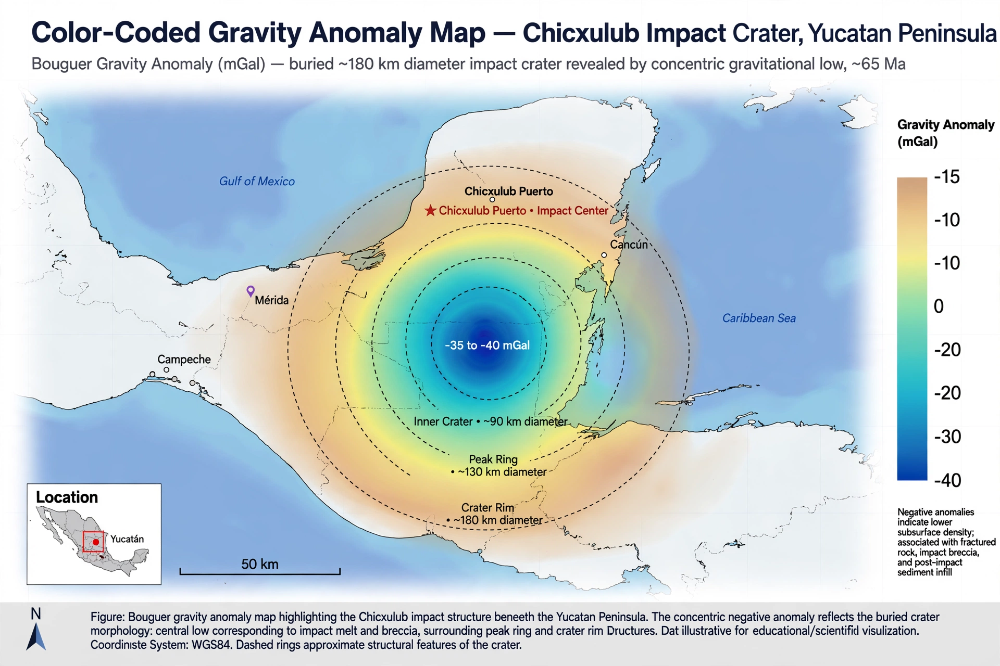

| Location | Yucatán Peninsula, Mexico |
|---|---|
| Coordinates | 21°24′N 89°31′W |
| Diameter | ~180 km (110 mi) |
| Age | 66.043 million years |
| Impactor | Asteroid or comet ~10–15 km wide |
| Exposed | No — buried ~1 km below the surface |

The Chicxulub crater is an impact crater buried underneath the Yucatán Peninsula in Mexico. Its center is offshore, near the communities of Chicxulub (both Chicxulub Pueblo and Chicxulub Puerto). It was formed slightly over 66 million years ago when a large asteroid, about 10–15 kilometres (6–9 miles) in diameter, struck the Earth. The crater is estimated to be about 180 kilometres (110 miles) in diameter and 20 kilometres (12 miles) deep.
The impact has been dated to the Cretaceous–Paleogene boundary and is widely accepted as the cause of the mass extinction that killed the non-avian dinosaurs.
The crater was discovered by geophysicists Antonio Camargo and Glen Penfield, who were working for the Mexican state oil company Pemex in the late 1970s while searching for petroleum. Its significance was recognized after Luis Alvarez and colleagues proposed in 1980 that an impact caused the end-Cretaceous extinction, citing a worldwide iridium anomaly in boundary clays. In 2016, the IODP/ICDP Expedition 364 drilled into the crater's peak ring, recovering core samples that confirmed impact models.
The collision released energy equivalent to billions of Hiroshima-scale bombs, generating mega-tsunamis, wildfires, and injecting vast quantities of sulphur-rich aerosols and dust into the stratosphere. The resulting "impact winter" blocked sunlight for years, collapsing photosynthesis and food chains. Whether volcanism from the Deccan Traps also contributed remains debated.
From Wikipedia, the free encyclopedia. Recreated from memory.